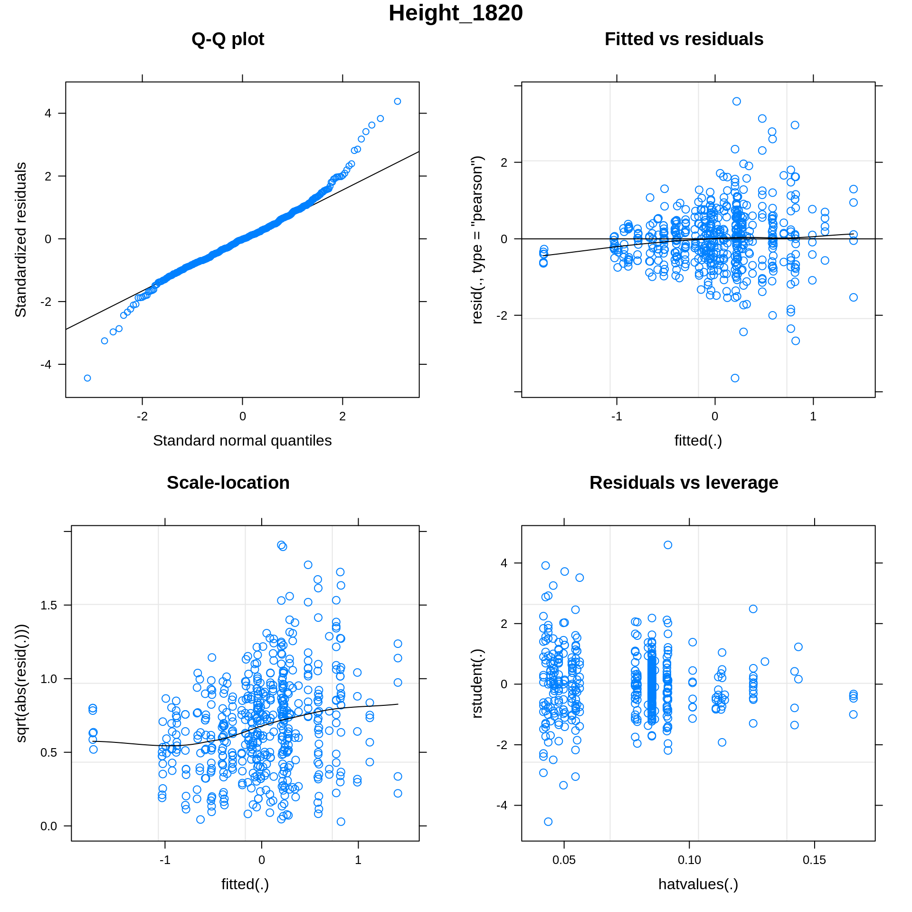
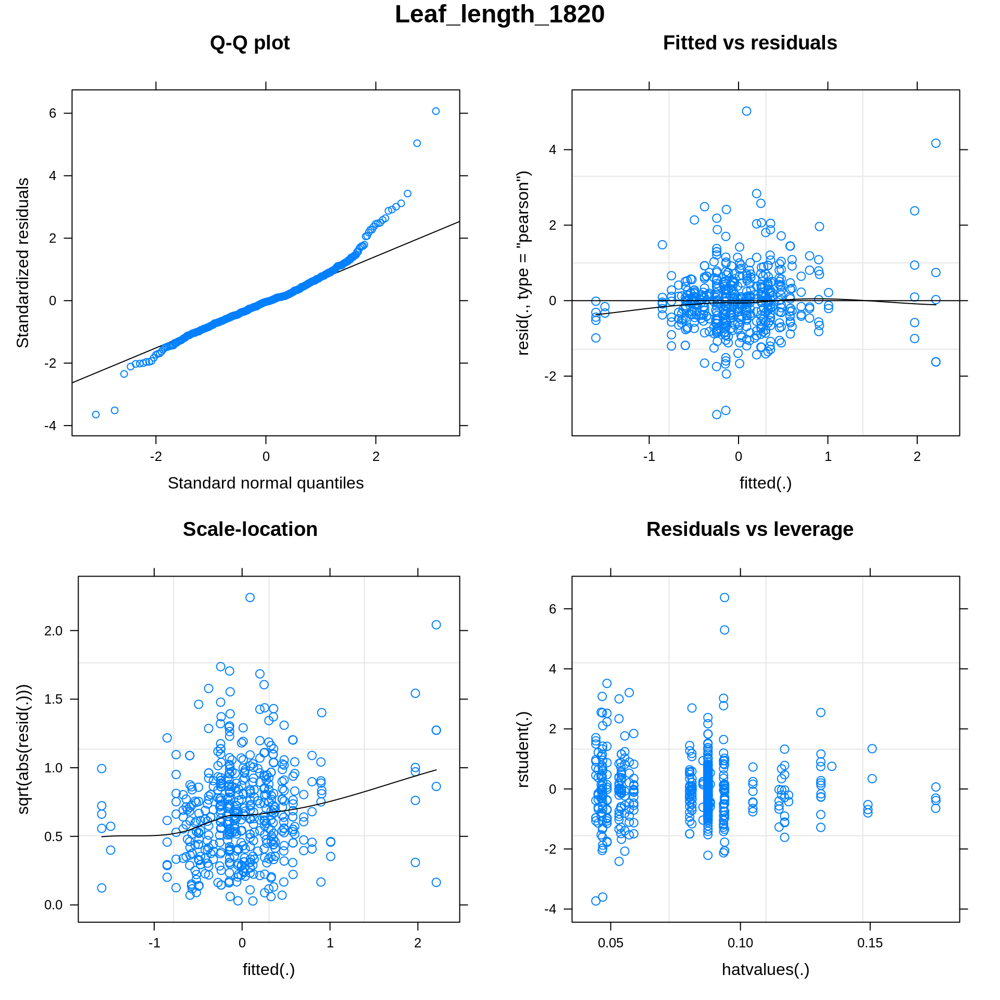
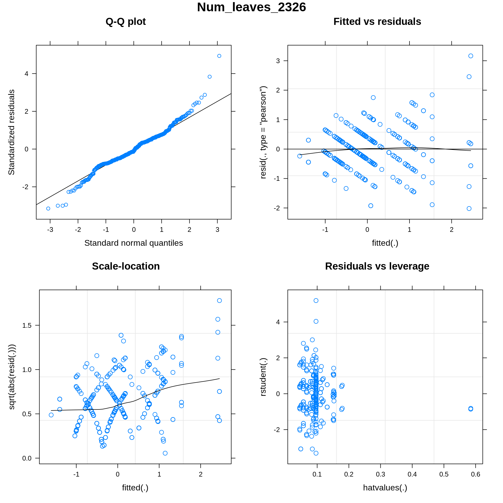
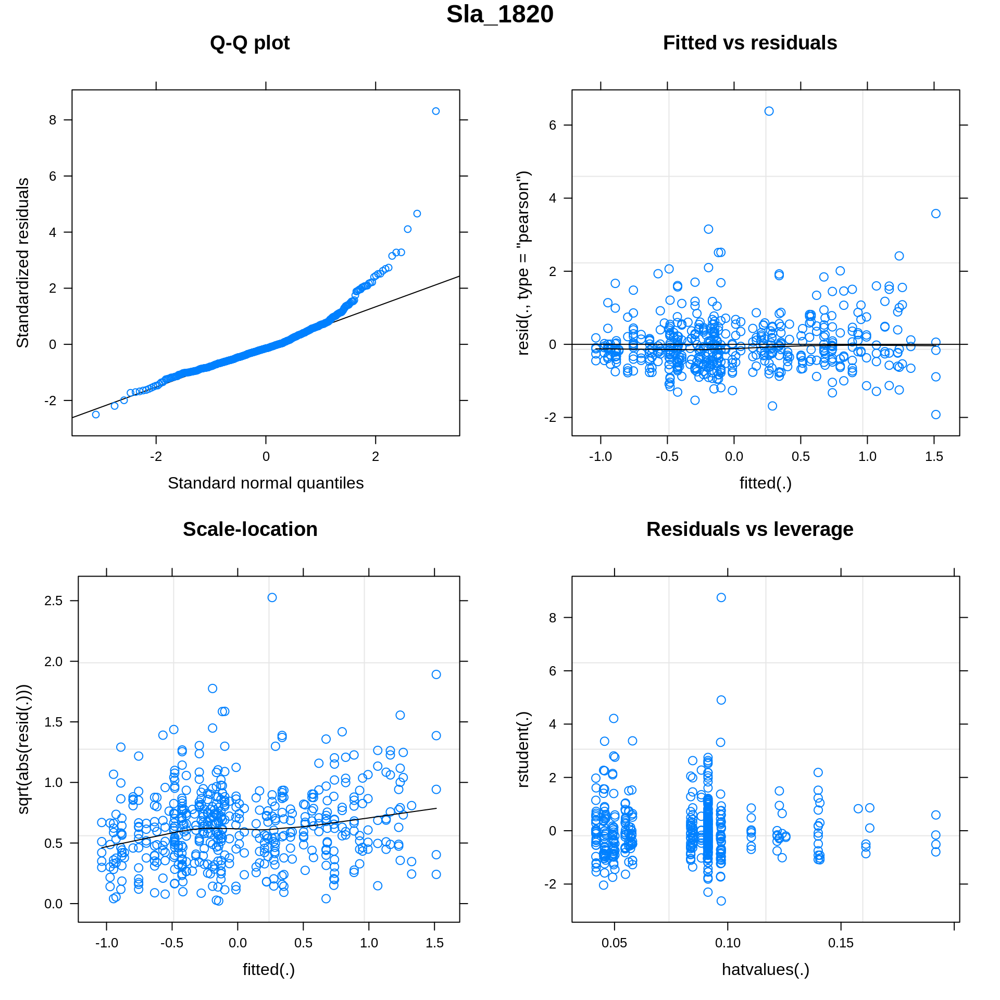
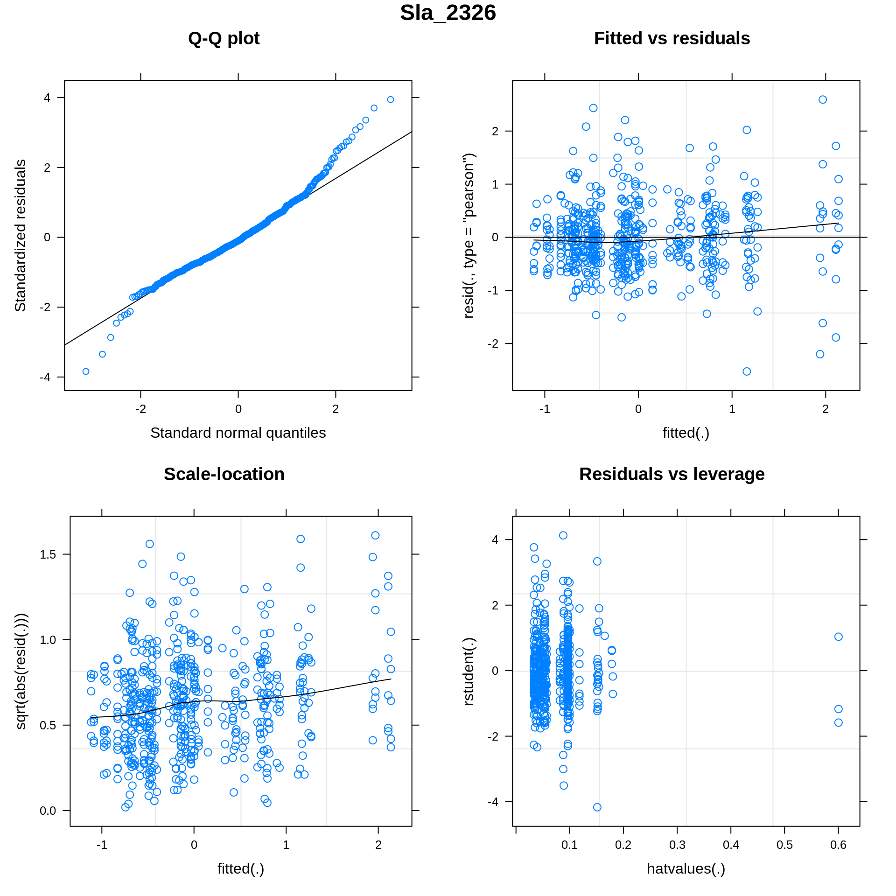
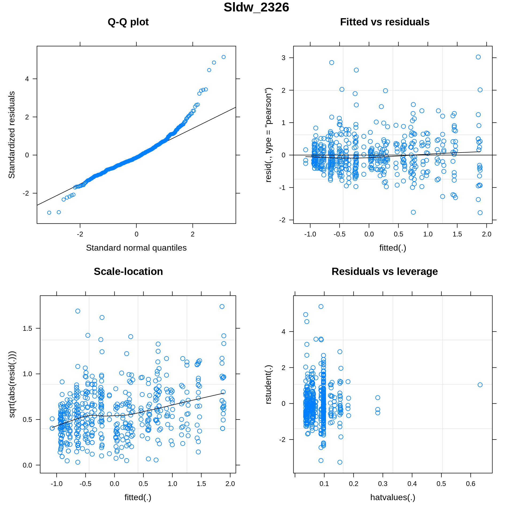
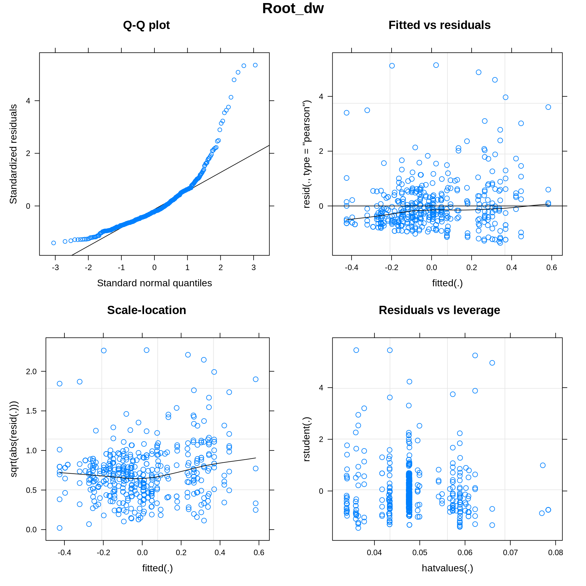
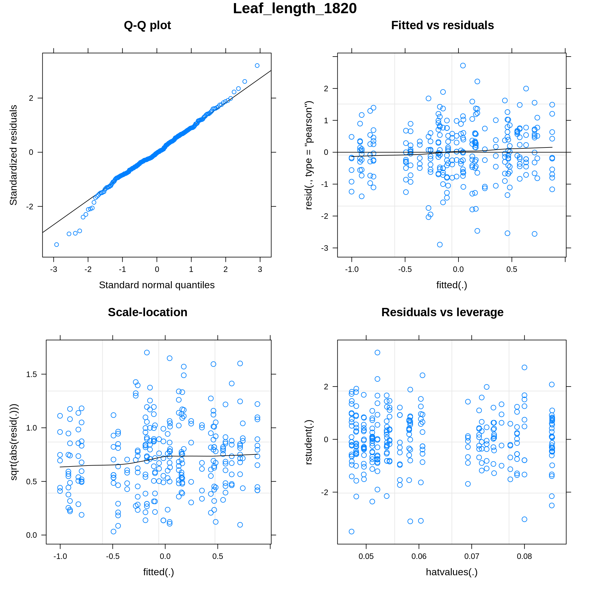
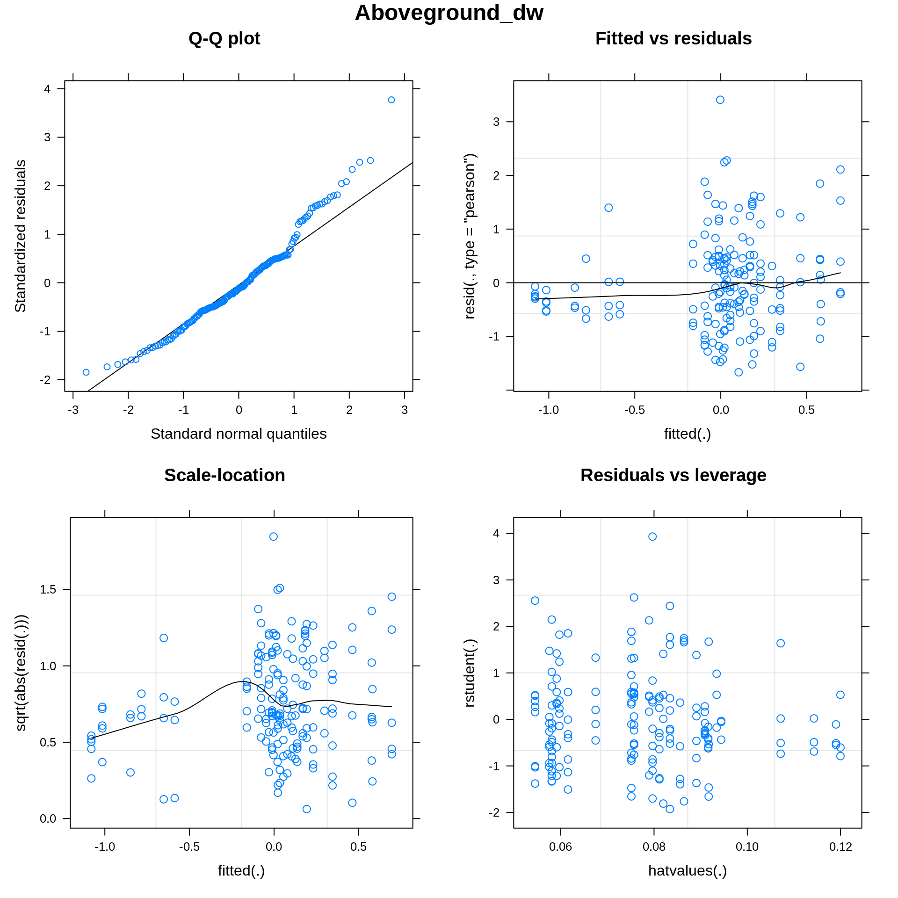

Brassicas_2021_morphology
Benjamin A Taylor
20/09/2021
Data import, pre-filtering and QC
Check trait distributions for Brassica:
And for Raphanus:
#what’s going on with root dry weight in these plots? It looks unimodal, but the scale seems off, perhaps indicating outliers. Sure enough,if we look at the quantile distributions for dry weight there are definitely outliers here, which we can reasonably attribute to experimental error given the sensitivity of the weighing to e.g. residual moisture in the roots.
## 0% 25% 50% 75% 95% 100%
## 0.0001 0.0090 0.0180 0.0300 0.0670 0.6160## 0% 25% 50% 75% 95% 100%
## 0.00010 0.00900 0.03200 0.06725 0.15325 0.30200To be safe, we’ll remove values for root dry weight that are more than 3 standard deviations above the mean.
## [1] "Removing values: "
## [1] "0.616" "0.175" "0.162" "0.171" "0.137"## [1] "Removing values: "
## [1] "0.302" "0.238" "0.257"How do the disributions look now for Brassica and for Raphanus?

Root dry weight looks better now, but root-shoot ratio is still very skewed- not surprising for a ratio like this. If we log the ratio, it looks much better:
We’ll use logged root-shoot ratio instead of the unmodified ratio henceforth. We’ll also drop days to germination, since this is clearly a highly unimodal trait.
Trait model testing
We’d now like to fit the data for each trait so that we can plug our data into mixed models down the line. In an ideal world each trait would be fit reasonably well by a normal distribution- let’s see if that’s the case. What we’re looking for:
- Points fitted nicely along the QQ plot abline
- Even distribution about abline in fitted vs residuals plot
- Roughly horizontal fit for scale-location plot
- No outiers in residuals vs leverage plot
First for Brassica traits:

Then for Raphanus traits:

While none of these fits are perfect, the only massive issues are with number of leaves, since this is a discrete integer trait and thus fits weirdly to a gaussian distribution. For this trait, we might be better off fitting a Poisson distribution:
This doesn’t necessarily look better, but it does make more sense (number of leaves is much more likely to be poisson distributed than gaussian, since it’s a discrete trait) so for num leaves we’ll use a poisson distribution going forward in place of a gaussian.
The other trait that looks odd in the above diagnostic plots is root dry-weight. We already know that this trait suffers from some skew, but we’d hoped to improve that by removing outliers earlier. Perhaps some kind of inverse link function could help with this?
That doesn’t look any better. What about a gamma distribution?
Even worse! Okay, there doesn’t seem to be any way to fit this trait nicely, so let’s just model it with a gaussian distribution but take the results with a pinch of salt.